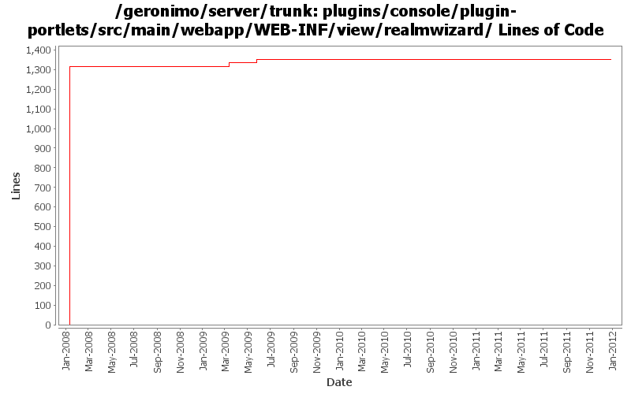

[root]/plugins/console/plugin-portlets/src/main/webapp/WEB-INF/view/realmwizard

| Author | Changes | Lines of Code | Lines per Change |
|---|---|---|---|
| Totals | 54 (100.0%) | 1472 (100.0%) | 27.2 |
| djencks | 27 (50.0%) | 1342 (91.2%) | 49.7 |
| dwoods | 15 (27.8%) | 79 (5.4%) | 5.2 |
| xuhaihong | 6 (11.1%) | 45 (3.1%) | 7.5 |
| jbohn | 5 (9.3%) | 5 (0.3%) | 1.0 |
| xiaming | 1 (1.9%) | 1 (0.1%) | 1.0 |
GERONIMO-6245 fix to trunk, provided by Yi Xiao
1 lines of code changed in 1 file:
GERONIMO-4553 Make web use of security realms depend on plugin visibility; make console expose the 'global' attribute for configuration (renamed from 'publish'). Also merges in geronimo-security changes from sandbox branches.
16 lines of code changed in 7 files:
GERONIMO-4620 Database Security Realm is removed from admin consonle after delete datasource it's based, thanks Han Hong Fang for the patch !
2 lines of code changed in 1 file:
GERONIMO-4517 Apply unified message display style(G-4484) to javascript alert messages. Together with the localization of these messages. Thanks for the patch, Gang Yin
43 lines of code changed in 5 files:
part 4 of more cleanup of old forms (see Rev738104 for part 3)
5 lines of code changed in 5 files:
cleanup old forms that are not using the post method - part 2 (see Rev735155 for part 1)
1 lines of code changed in 1 file:
cleanup old forms that are not using the post method
1 lines of code changed in 1 file:
GERONIMO-4474 Pull out the text in the JSP files to resource bundle files. Applied jsp-localization-tomcat6-connector.patch, jsp-localization-securityrealm.patch and jsp-localization-activemq-ra.patch from Gang Yin.
2 lines of code changed in 1 file:
GERONIMO-4474 Pull out the text in the JSP files to resource bundle files. Applied jsp-localization-fix.patch from Gang Yin.
1 lines of code changed in 1 file:
GERONIMO-4484 Extraction, localization and display of messages generated in portlets. Applied common-message-plugin.patch from Gang Yin, along with removing Tomcat API depends introduced in early patch.
11 lines of code changed in 2 files:
GERONIMO-4025 applied GERONIMO-4025-console.patch from Rex Wang.
4 lines of code changed in 1 file:
GERONIMO-4474 Additional localization patches from Gang Yin.
0 lines of code changed in 1 file:
GERONIMO-4081 Accessibility issues. Applied GERONIMO-4081-console.patch from Ivan.
59 lines of code changed in 7 files:
GERONIMO-3732 clean up resource bundles for new console plugin
10 lines of code changed in 10 files:
GERONIMO-3732. Move the rest of deployment functionality out of console base and (mostly) into plugin-portlets. Revert the accidental menu name change for looking at web apps
1316 lines of code changed in 10 files: